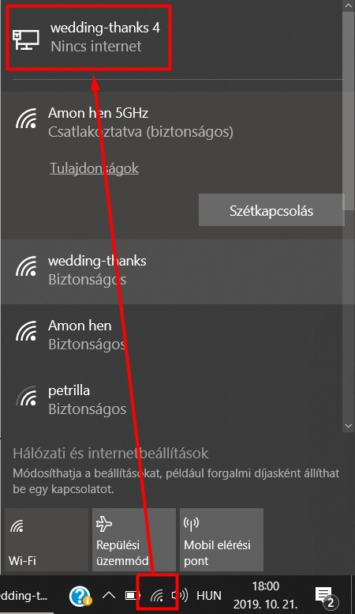

| white | status |
| green | okay |
| yellow | warning |
| red | error |
| red | sensor |
| yellow | leds/pixels |
| green | detection |
| cyan | connection |
| blue | registration of clients |
| magenta | movement |
| IDLE | ||||
| Unused. Only for debugging. | ||||
| BEFORE_DETECT | ||||
| Before detecting the rest position of the client. | ||||
| AFTER_DETECT | ||||
| After detecting the rest position of the client. | ||||
| SENSOR_OK | ||||
| After initializing the accelerometer sensor. | ||||
| PIXELS_OK | ||||
| After initializing the two leds on the clients. | ||||
| CONNECTION_OK | ||||
| When successfully connected to the WiFi network. | ||||
| REGISTRATION_OK | ||||
| When successfully with the server. | ||||
| DURING_DETECT | ||||
| During detecting the rest position of the client. | ||||
| CONNECTION_WAITING | ||||
| During waiting for WiFi connection. | ||||
| SENSOR_INIT_ERROR | ||||
| When there are some error with the sensor initialization. | ||||
| SENSOR_ERROR | ||||
| When there are some general error with the sensor. | ||||
| CONNECTION_ERROR | ||||
| When the client are unable to connect to the WiFi network. | ||||
| CONNECTION_LOST | ||||
| When WiFi network connection lost (router are inactive). | ||||
| REGISTRATION_ERROR | ||||
| When the client can not register with the server. | ||||
| MOVEMENT_ERROR | ||||
| When the client can not send movement data to the server. | ||||
Does wedding-thanks WiFi network available?
Restart the router!
Is laptop connected to the network?
Is laptop ip address is 192.168.1.2 (on the wire network)?
Reconnect to the network!
http:\\127.0.0.1 displays "Hello World" on the laptop?
http:\\192.168.1.2 displays "Hello World" on the laptop?
Restart the server!
http:\\192.168.1.2 displays "Hello World" on other device connected to wedding-thanks WiFi network?
Check network connection to the router!
Is the client showing various feedback codes?
Restart the client!
f"successful registration: {address} ({clients.index(address)}th client)"Do the clients restarts several times or it stuck with a feedback code of severity error?
You are able to test each client in sequence on http://127.0.0.1/demo or http://192.168.1.2/demo?
Turn off all clients then restart the server and start again!
Do the clients show some animation?
Does the server notice the movement?
f"the {index}th client is registered a movement"
Turn of everything and repeat the whole process!
After the server notice a movement it would not accept any new movement for 20 seconds. You could check the remaining time in the server log messages.Clients display the requested animation?
Does your message visible in the list on the webpage?
Turn of everything and repeat the whole process!